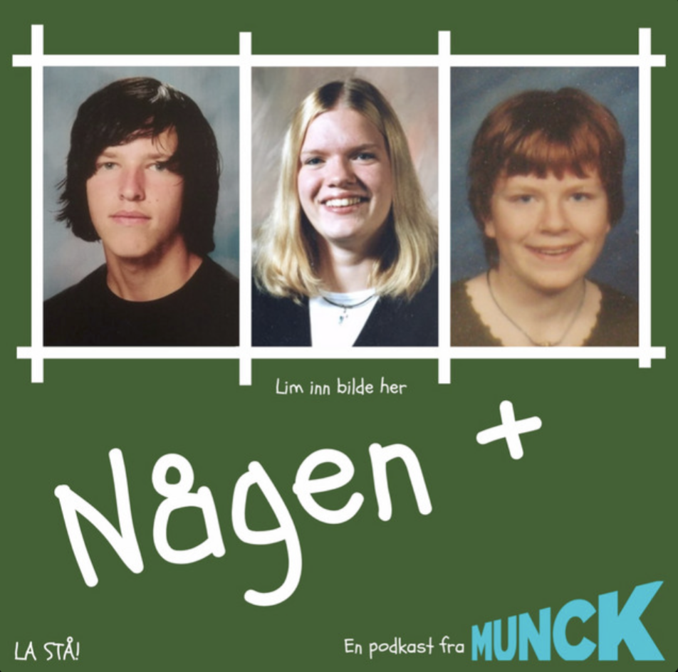

Någen+
Gamle norskstiler leses høyt og sensureres av to som ikke viker unna det flaue. Kristin Nordvoll Mork og Anders Havdal Tangenes vurderer stilene til Janne Bjerkholt Chen (og noen av Kristins egne). Tolv episoder fra 2019, produsert av Munck Studios.
Lytt på Apple Podcasts